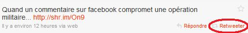
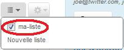
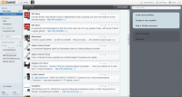
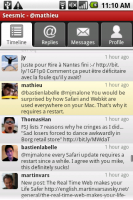
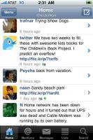

Bonjour à tous. :) Vous avez déjà sûrement entendu parler de Twitter, mais peut-être que vous vous demandez de quoi il s'agit. Si c'est en effet le cas, vous avez frappé à la bonne porte : ce tutoriel vous explique les bases de l'utilisation de Twitter et les pratiques en vigueur sur le site.
Nous allons commencer par une question qui doit sûrement vous ronger : qu'est-ce que Twitter ?
Le réseau social a été créé en avril 2007 dans la ville de San Francisco, aux États-Unis. Il a à l'origine été créé pour partager avec ses amis plusieurs choses telles que le lieu où vous vous trouvez, ce que vous faites, etc. Actuellement, ces informations ne sont plus exclusivement partagées avec des gens que vous connaissez IRL, c'est même la plupart du temps le contraire.
Le principal avantage de Twitter est le fait qu'une information peut circuler et informer des millions de personnes du réseau en très peu de temps. Cet avantage est à double tranchant : puisqu'il est si facile pour une personne de faire circuler une information, une désinformation plus ou moins large sera faite si l'actualité est fausse ou partiellement erronée. Un exemple de la puissance du réseau social : lors du tremblement de terre qui s'est déroulé le 12 janvier 2010 à Haïti, des personnes se trouvant sur les lieux de la catastrophe ont envoyé des photos du désastre sur Twitter. En quelques heures, des millions de personnes − si ce n'est plus − ont été informées de la catastrophe naturelle.
Les médias ont compris qu'ils ne seront maintenant plus les premiers à relayer une information, aussi pratiquement toutes les chaînes d'information possèdent un « consultant Twitter », qui a pour mission de dénicher des actualités sur le site de microblogging.
À l'heure où j'écris ces lignes, Twitter a franchi le cap des 10 milliards de tweets et compte plus de 75 millions d'utilisateurs.
Inscription
Avant de commencer à utiliser Twitter, il faut bien évidemment s'y inscrire.
Tout d'abord, rendez-vous sur le site puis cliquez sur le lien d'inscription « Sign up now » (à droite de la page). Indiquez votre nom complet (full name, utile si quelqu'un veut vous retrouver à partir de votre nom), un nom d'utilisateur (username), un mot de passe (password), votre adresse mail (email), puis remplissez le captcha. Si vous vous sentez motivé, lisez les conditions d'utilisation du service (Terms of Service), et pour finir validez !
3... 2... 1... Followez !
Vous arrivez sur une page qui va vous permettre de sélectionner les sources d'information que vous désirez suivre (journaux, chaînes de télévision, radios) et de trouver d'éventuels amis qui seraient déjà sur Twitter (si si, c'est possible :-° ).
Dans le cadre de gauche, choisissez une catégorie qui vous intéresse. Une liste de personnes relayant régulièrement des informations du type choisi (ce sont généralement des personnes très connues : par exemple, dans la catégorie technologies se trouvent la BBC, Bill Gates, le co-fondateur de Twitter et bien d'autres). Cliquez sur le bouton Follow de celles que vous désirez suivre : cela signifie que les tweets des utilisateurs que vous sélectionnez apparaîtront sur votre page d'accueil. Dans le jargon Twitter, on dit que vous followez (de l'anglais follow, suivre) ces utilisateurs et que vous êtes un de leurs followers. Une fois que vous avez sélectionné vos stars préférées ( :-° ), passez à l'étape suivante.
On vous donne ici la possibilité de retrouver les personnes se trouvant dans votre répertoire Gmail, AOL ou Yahoo. Sélectionnez le service que vous désirez utiliser pour ce faire, puis saisissez vos identifiants (pas d'inquiétude, la connexion au site est sécurisée). Une fois que vous avez retrouvé (ou non) des connaissances, passez à l'étape suivante.
L'ultime étape vous permet de trouver quelqu'un à partir de son nom de famille, d'utilisateur, ou de société.
Après ça, l'inscription est finie et vous êtes redirigé vers votre timeline : votre page d'accueil Twitter, où vous voyez les tweets des utilisateurs que vous followez. Par la suite, n'oubliez pas d'activer votre compte en cliquant sur le lien du mail que Twitter vous a envoyé.
Voici votre situation actuelle : vous venez de vous inscrire sur Twitter, vous êtes heureux d'être enfin présent sur le site du moment, mais vous n'avez pas d'avatar, aucune information sur vous (si ce n'est votre nom) n'est présente sur votre profil, le site est en anglais, et vous avez l'image d'arrière-plan par défaut. Que diriez-vous d'une petite personnalisation ?
Pour vous rendre sur l'interface des réglages, cliquez sur le lien « Settings », en haut à droite de la page. Plusieurs onglets vous sont proposés.
Onglet « account »
Cet onglet vous permet de modifier les informations de votre compte : nom d'utilisateur, adresse mail, langue du site, fuseau horaire et pour finir, activer ou non l'option de géolocalisation et de privatisation des tweets. Je vais détailler les champs en gras.
Le champ fuseau horaire sert à adapter les heures relatives aux tweets : si un utilisateur résidant au Canada en poste un à 16 h 00 (heure locale), il sera alors 22 h 00 pour vous (si vous habitez en France) et le premier horaire pourra être adapté à votre fuseau. Si vous résidez en France ou aux alentours (Belgique par exemple), prenez l'option (GMT+1) Paris. Si ce n'est pas le cas, cherchez dans la liste la grande ville la plus proche de votre lieu de résidence.
Si vous choisissez d'activer l'option de géolocalisation, vos tweets seront, si vous tweetez depuis un téléphone mobile ou autre machine capable de vous situer dans l'espace, annotés du lieu où vous vous trouvez.
Si l'option de privatisation de La Poste de vos tweets est activée, cela signifiera que tout le monde ne peut pas voir ces derniers (ce qui n'est pas le cas si l'option est désactivée, sachez-le). Toute personne désireuse de vous follower devra alors vous envoyer une demande (que vous validerez ou non). Twitter vous conseille de laisser vos tweets publics afin d'en faire profiter le maximum de gens et je ne peux que vous encourager à suivre ce conseil. :)
Onglet « mot de passe »
Maintenant que vous avez, je suppose, passé le site en français, je vais pouvoir donner l'appellation française des onglets. :p Je ne vais pas passer deux heures sur celui-ci, il vous permet de changer de mot de passe.
Onglet « mobile »
Il semblerait que cette option ne soit pas disponible si vous résidez en France, il m'est donc impossible de décrire la procédure. Si vous êtes en mesure de le faire, merci de m'envoyer un MP. :)
Onglet « notifications »
Ici, vous pouvez choisir ou non de recevoir un mail quand :
un utilisateur décide de vous follower ;
quelqu'un vous envoie un message privé ;
la newsletter de Twitter est envoyée aux inscrits.
Onglet « profil »
Vous l'auriez sans doute deviné sans que je vous le dise, vous pouvez ici modifier les informations qui apparaissent sur votre profil. :-° Vous pouvez vous choisir un nouvel avatar, modifier votre nom (même si ça ne risque pas d'arriver très souvent :p ), indiquer là où vous habitez, votre site web si vous en avez un, et même rédiger une petite biographie de 160 caractères.
Onglet « thème »
Cet onglet vous permet de changer l'apparence de votre page Twitter. Sélectionnez le thème de couleurs qui vous plaît le plus. Vous pouvez par la suite le modifier en changeant l'image d'arrière-plan, les couleurs du texte, des liens, etc. Vous avez également la possibilité de ne pas utiliser d'image de fond du tout.
Dans cette partie, nous allons aborder plusieurs choses : les tweets, les retweets et les possibilités d'interaction avec les autres utilisateurs.
Les tweets
Un tweet est un message que vous envoyez sur votre page Twitter, je vous l'avais déjà dit plus haut. J'avais juste oublié un détail très important : un tweet ne peut contenir plus de 140 caractères.
Comment ça ? Si moi je veux raconter à tout le monde ma rencontre avec Britney Spears et que ça ne tient pas en 140 caractères, je peux faire comment ? :euh:
Vous avez plusieurs possibilités. Tout d'abord, vous pouvez poster plusieurs tweets se finissant par « [...] » pour indiquer que chacun d'entre eux a une suite. Vous pouvez également opter pour un site web tel que tinypaste ou twitlonger qui vous permet de poster un tweet en ajoutant un lien vers la suite.
Maintenant que vous êtes rassuré, postez votre premier tweet et savourez l'instant. :-°
Les retweets
C'est grâce aux retweets qu'une information peut circuler si rapidement sur Twitter. Retweeter signifie relayer une information pour que tous vos followers puissent en être informés et la retweetent à leur tour. Pour retweeter un tweet, il y a deux possibilités. Soit vous choisissez la façon « à l'ancienne » et vous formatez votre tweet selon la syntaxe « RT @[auteurDuTweetÀretweeter] [contenuDuTweetÀretweeter] », soit vous cliquez directement sur le lien Retweet se trouvant en bas à droite de chaque tweet.

Interactions avec les utilisateurs
Les replies
Vous avez vu un tweet auquel vous souhaiteriez réagir ou vous souhaitez simplement dire quelque chose à un autre utilisateur ? C'est bien sûr possible. Pour cela, il faut envoyer un tweet commençant par le signe arobase (@) suivi du nom de l'utilisateur auquel vous voulez parler. Exemple : « @BillGates Tu veux venir manger à la maison ce soir ? ». Une fois le message posté, l'utilisateur concerné pourra voir votre tweet en cliquant sur le lien @[nomDutilisateur] qui se situe à droite de la page d'accueil de Twitter.
Les listes
Sur Twitter, il est possible de créer des listes d'utilisateurs. Le principe est simple : une liste comporte en plus de son nom un certain nombre d'utilisateurs. Une fois qu'elle est créée, n'importe qui peut follower la liste, et donc tous les utilisateurs qu'elle contient. Pour créer une liste, c'est très simple. Dans le menu de droite se trouve une section listes. Cliquez sur le lien Nouvelle liste se trouvant en dessous. Indiquez son nom, une courte description, si elle doit être visible par tout le monde ou seulement par vous, puis validez. Vous êtes redirigé vers une page vous demandant d'entrer le nom d'utilisateur d'une des personnes qui figureront dans votre liste. Une fois cela fait, cliquez sur la deuxième icône en partant de la gauche (celle en forme de liste), puis cochez la case correspondant à votre liste.

Recommencez l'opération pour les autres utilisateurs que vous voulez voir apparaître dans celle-ci. :)
Les hashtags
Derrière ce nom barbare se cache en fait un principe très simple. Un hashtag est une chaîne de caractères ne contenant que des lettres et éventuellement des underscores (_), précédée du symbole spécial #. L'utilité ? Une fois votre tweet contenant un hashtag envoyé, vous avez la possibilité de cliquer sur ce dernier. En faisant cela, vous pouvez voir la liste de tous les tweets contenant le hashtag ! Petit exemple de tweet contenant un hashtag :
Citation
Je suis en train d'écrire un tutoriel sur le Site du Zéro. #SdZ
Le hashtag est ici en orange. En cliquant dessus, vous vous retrouvez sur la page http://search.twitter.com/search?q=%23sdz et vous pouvez consulter tous les tweets contenant le hashtag.
Voici une liste (non exhaustive) de quelques hashtags populaires :
#FollowFriday (ou #FF, ou les deux en même temps) : tous les vendredis, vous pouvez conseiller à vos followers des personnes à suivre en utilisant ce hashtag. Exemple : « #FollowFriday #FF @lemondefr @tanteJasmine @BillGates ».
#nowPlaying : avec ce hashtag, vous pouvez indiquer la musique que vous êtes en train d'écouter si ça vous chante (pas fait exprès le jeu de mots :-° ). Petite variante si vous souhaitez poster un film que vous êtes en train de regarder : #nowWatching.
#SdZ : quand un tweet parle du Site du Zéro, il contient souvent ce hashtag. Utilisez-le donc si vous dites quelque chose en rapport avec le site. :)
#fail : quand vous trouvez sur le Web quelqu'un ou quelque chose de désobligeant, de raté, etc. vous pouvez le tweeter en utilisant ce hashtag.
Favoris
Vous avez vu un tweet qui parlait d'un sujet qui vous intéresse, mais vous n'avez pas eu le temps de lire l'article dont il parlait ? Pour éviter qu'il soit noyé dans la masse, vous avez la possibilité de le marquer en favori (icône en forme d'étoile, en haut à gauche du tweet) puis de le retrouver en allant dans Favoris, du menu de droite.
Les messages privés
Les messages privés (ou MP), direct message (ou DM) en anglais, fonctionnent sur un principe très simple : seul l'utilisateur auquel il est destiné peut lire le message. Pour en envoyer un, c'est très simple. Dans le menu de droite (eh oui, tout se trouve là ;) ), cliquez sur le lien Messages privés. La liste des messages reçus s'affiche. Une particularité des MP sur Twitter est que vous pouvez en envoyer seulement aux gens qui vous suivent. Impossible donc, d'envoyer un message privé à Bill Gates pour lui proposer de venir dîner chez vous. :-° Je ne vous fait pas l'offense de détailler la procédure d'envoi d'un message, je pense que vous saurez le faire tout seul. :)
Si vous voulez avoir un nombre intéressant de followers, il faudra commencer par poster des tweets intéressants. Tenez-vous au courant de l'actualité grâce aux sites prévus à cet effet (01net, le Monde, etc.).
Tes sources tu citeras
Lorsque vous tweetez une information, il faut impérativement que le message contienne un lien vers une source de foi (journal, site web). Sans ça, votre information ne sera pas crédible.
Le SMS tu banniras
Twitter est un réseau social de microblogging, pas une messagerie instantanée. Écrivez vos tweets dans un français correct, ou je vous garantis que vous ne dépasserez pas les vingt followers !
Les URL tu raccourciras
Lorsqu'on est limité à 140 caractères par message, mieux vaut éviter de poster directement les URL trop longues. Par exemple si vous voulez poster « Un tutoriel sur PHP et MySQL écrit par Mathieu Nebra sur le Site du Zéro » avec un lien vers le tutoriel PHP du site (http://www.siteduzero.com/tutoriel-3-1 [...] avec-php.html), vous n'aurez pas assez de place. Pour remédier à cela, il existe des raccourcisseurs d'URL. Le principe est simple : pour chaque URL, le site génère un identifiant unique. Lorsqu'un utilisateur se rend à l'adresse http://site.com/identifiantDeLUrl, il est redirigé vers l'URL originale.
Il en existe beaucoup : bit.ly, tinyurl, etc. Pour raccourcir une URL, c'est simple : rendez-vous sur le site que vous avez choisi et entrez-y l'URL que vous désirez réduire. Un lien raccourci vous sera fourni. C'est celui-ci que vous devrez utiliser dans votre tweet. :) Par exemple, une des URL raccourcies du tutoriel PHP du SdZ est http://bit.ly/cFNX9a (20 caractères au lieu de 74 !).
Notez qu'il existe également des modules complémentaires tels que celui du site bit.ly (pour Google Chrome, Mozilla Firefox et sûrement d'autres) ou goo.gl (pour Firefox et Chrome également).
Envoi de contenu multimédia
Bien que Twitter ne permette pas par défaut d'envoyer du contenu multimédia, d'autres sites jouent le rôle d'intermédiaire.
Images
Si vous voulez uploader une photo pour qu'elle soit visible sur Twitter, rendez-vous sur le site Twitpic. Entrez vos identifiants Twitter, cliquez sur le lien Upload photo en haut à droite de la page, et vous pouvez envoyer votre image. :) Par défaut, un tweet contenant un lien vers celle-ci sera automatiquement posté depuis votre compte.
Vidéos
Le principe est le même pour les vidéos, c'est seulement le site qui change : il vous faut cette fois utiliser Twitvid.
Les clients
Twitter possède une API permettant à n'importe qui de développer une application depuis laquelle il est possible de gérer son compte, envoyer des tweets et toute autre fonctionnalité disponible sur le site. Grâce à cela, de nombreux clients existent. Voyons-en quelques types.
Les clients logiciels
Il existe bien sûr des clients sous forme d'application.
Des développeurs trouvant l'interface de Twitter pas assez intuitive à leur goût ont décidé de créer leur propre plate-forme pour interagir avec le réseau social. Il en existe une bonne liste et une simple recherche sur le Net peut vous permettre de les trouver. Je me permets cependant de vous conseiller cotweet, un site très intuitif et facile à prendre en main. Petite capture d'écran en bonus :  L'interface de cotweet (cliquez pour agrandir)
Les clients mobiles
Il existe également des clients pour téléphones mobiles.
iPhone/iTouch : Echofon, TwitterFon, Tweetie, etc. Ces applications sont disponibles gratuitement dans l'Apple Store.
Android :Seesmic, Twidroid, etc. Ces applications sont théoriquement disponibles sur l'Android Market, bien que je n'aie pas réussi à les trouver. :-°
Les interfaces respectives de Seesmic (Android) et d'Echofon (iPhone/iTouch).
Les deux applications dont j'ai posté la capture d'écran (Seesmic et Echofon) sont celles que je vous conseille. :)
Enfin, sachez que des commandes Twitter existent. Je ne les présenterai pas dans cet article car je trouve leur utilité très contestable.
Ce tutoriel s'arrête ici, j'espère qu'il vous aura servi !
Si vous avez une suggestion/question/remarque, envoyez-moi un MP. :)
Un grand merci à 6pri1 pour sa relecture et ses remarques judicieuses et à Fihld et Guillawme pour la zCorrection.
@+ Psst, si vous voulez me suivre sur Twitter, c'est par ici. :-°
{kind=link}
{kind=link}
{kind=link}
{kind=link}
{kind=link}
{kind=link}